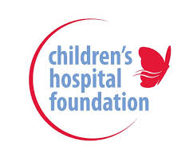
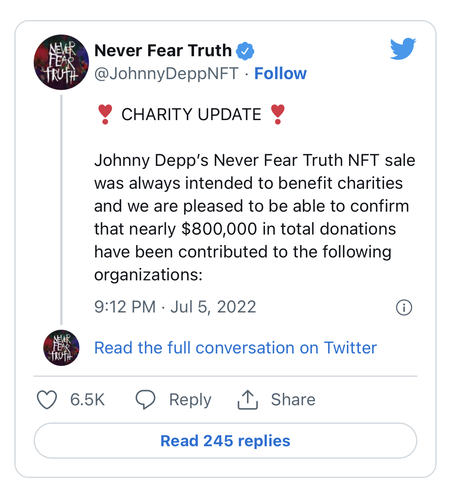
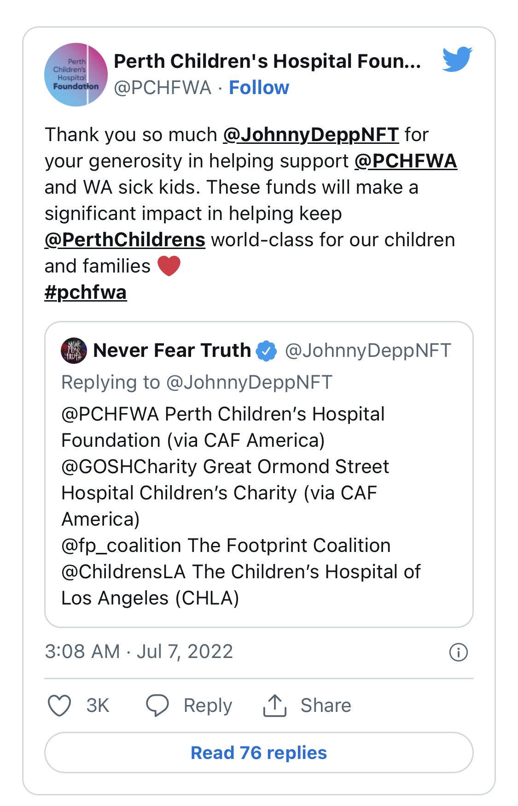
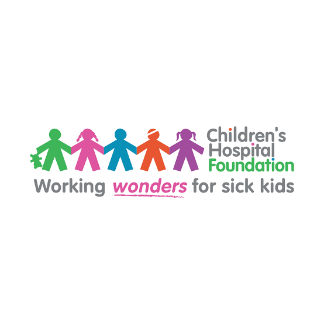

Johnny Depp donates almost £670,000 to children’s hospitals
Johnny Depp has donated almost £670,000 to children’s hospitals in the UK, US and Australia.
The 59-year-old actor gifted Perth Children’s Hospital Foundation, the Great Ormond Street Hospital Children’s Charity and the Footprint Coalition and the Children’s Hospital of Los Angeles the large sum through the sale of NFTs (non-fungible tokens).
NFTs, which are described as “a digital asset that represents real-world objects like art, music, in-game items and videos bought and sold online, frequently with cryptocurrency”, according to Forbes.

The recipients will share the proceeds, which Depp’s NFT community called Never Fear Truth, has split between them.

"Thank you so much Johnny Depp NFT for your generosity in helping support Perth Children’s Hospital Foundation and WA sick kids. These funds will make a significant impact in helping keep Perth Children’s Hospital world-class for our children and families."
.
“I am honored to be associated with brave little Dustin by wearing this silver and leather wrist band.” – Johnny Depp wearing memorial bracelet at his induction to the Hollywood Walk of Fame.
Golden Globe winner, musician (guitar), French winemaker and restaurateur, Johnny Depp is authentically touched by the genuine nature of a child’s request.
Depp made a voice message for a 17-year-old British girl who had been in a coma for five months; parents of the girl asked him to tape a voice message because he was the favorite actor of their daughter and they hoped playing the message everyday would help wake her up. As an advocate for Sophie's Gift, a growing database of celebrity messages aimed at helping coma patients and raising funds for crucial hospital equipment, Depp was touched by the letter and said he would do whatever he could to help.
Another touching moment at his induction to the Hollywood Walk of Fame, Depp wore Dustin’s memorial bracelet of Children's Hospice & Palliative Care Coalition, a social movement led by children’s hospitals, hospices, home health and grassroots agencies, and individuals to improve care for children with life-threatening conditions and their families. Similarly, Depp supports Helen & Douglas House, a registered UK charity providing respite and end of life care for children and young adults with life-shortening conditions, as well as support and friendship for the whole family. Johnny donated underwear to a charity auction benefitting Helen & Douglas House. The winner bid £1600 ($3000).
In response to a scare within Depp’s own family, in March 2007, he donated $2 million to the Great Ormond Street Hospital in London, which treats children who are suffering from the rarest, most complex and often life-threatening conditions, as thanks for the treatment his daughter Lily-Rose received at the facility after contracting an E. Coli infection that caused kidney failure.
In 2006 he received the Courage to Care award in recognition of his contributions to the Children's Hospital Los Angeles, which provides seriously ill children with medical care from some of the country’s best doctors regardless of their families’ ability to pay.
Depp sent a shirt which he wore in The Libertine to a British fan after she wrote asking him to donate something in aid of charity.
He autographed items for an auction to benefit Julian House.
Inspired by his charity work, Johnny’s fans have founded a group called Johnny’s Angels:Depp Fans for Charity. The group focuses on raising awareness and funds for children’s hospices, in particular the Children's Hospice & Palliative Care Coalition.
Johnny Depp has supported the following charities listed on this site:
Actors Fund of America
Annual Duesenberg Imperial Ball
Children's Hospice & Palliative Care Coalition
Children's Hospital Los Angeles
Dogs Deserve Better
Environmental Justice Foundation
Great Ormond Street Hospital
Helen & Douglas House
Julian House
Much Love Animal Rescue
Northampton Welfare Rights Advice Service
Orca Network
Parkinson Society Maritime Region
Project HOME
Ronald McDonald House Charities
Sophie's Gift
The Art of Elysium
Unite for Japan
War Child
